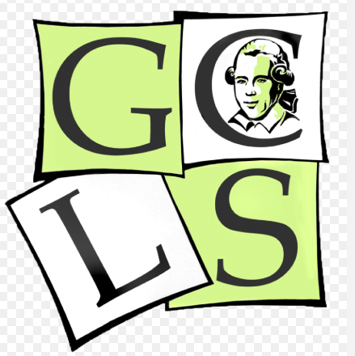

Ganz einfach, natürlich mit Hintergrundgeschichte. Das ganze fing an in der Siebten Klasse an der GCLS, in welcher ich Latein als Wahlpflichunterrichts Fach hatte. Ich war weder mit dem Fach noch mit der Leistung von mir zufrieden, daher hatte ich vor es abzuwählen. Jedoch war ich zu faul das Fach abzuwählen und habe deshalb bis zur achten Klasse gewartet. Dann kam ich in den Bürokommunikations Krurs.
ist mir aufgefallen, dass es mir hier sehr gut gefällt, da wir viel mit Computern lernen und ich denke, dass es uns in der Zukunft viel helfen wird.
Nachdem wir Powerpoint, Word, Gimp und ein wenig Excel gelernt hatten, hatten wir 3 möglichkeiten: Erweitertes gimp, Erweitertes Excel, oder die Grundlagen des Webdevelopments zu lernen. Ich - der sehr interessiert war an dem coden von Websites zu der Zeit - habe natürlich nicht lang gezögert und das Webdevelopment gewählt, in der Hoffnung neue Techniken zu erlernen.